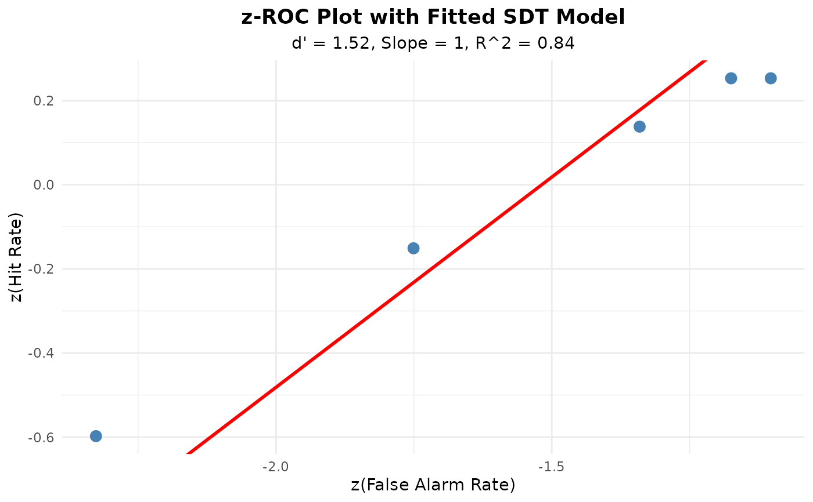

Fits an equal-variance or unequal-variance SDT model to ROC data using z-ROC analysis. Extracts discriminability (d'), decision criteria (c), and optionally the target/lure variance ratio.
Usage
fit_sdt_roc(
data,
lineup_size = NULL,
model = c("equal_variance", "unequal_variance"),
bootstrap = TRUE,
n_bootstrap = 1000,
conf_level = 0.95,
seed = NULL
)Arguments
- data
A dataframe with columns: target_present, identification, confidence OR a rocdata object from make_rocdata()
- lineup_size
Integer. Number of people in lineup (required if data is dataframe)
- model
Character. "equal_variance" or "unequal_variance" (default = "equal_variance")
- bootstrap
Logical. Compute bootstrap confidence intervals? (default = TRUE)
- n_bootstrap
Integer. Number of bootstrap samples (default = 1000)
- conf_level
Numeric. Confidence level for intervals (default = 0.95)
- seed
Integer. Random seed for reproducibility (default = NULL)
Value
An S3 object of class "sdt_roc_fit" containing:
dprime: Overall discriminability (d')
criteria: Decision criterion for each confidence level (c values)
variance_ratio: Ratio of target SD to lure SD (if unequal_variance)
slope: Slope of z-ROC
intercept: Intercept of z-ROC
roc_data: Original ROC data with z-transforms
model_type: Type of model fit
bootstrap_ci: Confidence intervals (if bootstrap = TRUE)
fit_diagnostics: R-squared, residuals, etc.
Details
**z-ROC Analysis**:
The z-ROC is created by plotting z-transformed hit rates against z-transformed false alarm rates for each confidence level.
Under equal-variance SDT: - z-ROC should be linear with slope = 1 - d' = z(HR) - z(FAR) for any criterion - Intercept = d' in the line z(HR) = z(FAR) + d'
Under unequal-variance SDT: - Slope = SD_lure / SD_target - Slope > 1 indicates greater variability in lure distribution
**Parameter Estimation**: - d' = average distance between distributions in standard deviation units - c = decision criterion (0 = unbiased, positive = conservative, negative = liberal) - Higher d' = better discriminability
**Bootstrap Confidence Intervals**: If bootstrap = TRUE, resamples data with replacement to estimate standard errors and confidence intervals for all parameters.
References
Macmillan, N. A., & Creelman, C. D. (2005). Detection theory: A user's guide (2nd ed.).
Mickes, L. (2015). Receiver operating characteristic analysis and confidence-accuracy characteristic analysis in investigations of system variables. Journal of Applied Research in Memory and Cognition, 4(2), 93-102.
Examples
# Simulate data
sim_data <- simulate_lineup_data(
n_tp = 200, n_ta = 200,
d_prime = 1.5,
conf_levels = 5,
seed = 123
)
# Fit equal-variance SDT model
sdt_fit <- fit_sdt_roc(sim_data, lineup_size = 6, bootstrap = FALSE)
print(sdt_fit)
#>
#> === SDT Model Fit to ROC Data ===
#>
#> Model: Equal Variance
#>
#> Parameters:
#> d' (discriminability): 1.518
#>
#> z-ROC Line:
#> Slope: 1
#> Intercept: 1.518
#> R-squared: 0.835
#>
#> Decision Criteria (c):
#> Criterion Value
#> c1 1.462
#> c2 0.951
#> c3 0.601
#> c4 0.461
#> c5 0.425
#>
#> Interpretation:
#> - Moderate discriminability (1.0 <= d' < 2.0)
#> - Conservative bias (mean c > 0)
plot(sdt_fit)

# Get d' estimate
sdt_fit$dprime
#> [1] 1.518421
# Fit unequal-variance model
sdt_uv <- fit_sdt_roc(
sim_data, lineup_size = 6, model = "unequal_variance", bootstrap = FALSE
)
sdt_uv$variance_ratio
#> z_far
#> 0.713702
# \donttest{
# Use more replicates for publication analyses.
sdt_boot <- fit_sdt_roc(
sim_data, lineup_size = 6, n_bootstrap = 200, seed = 123
)
# }